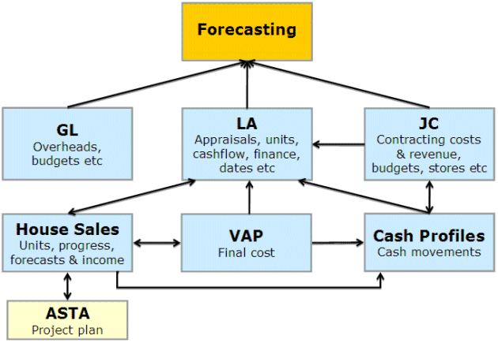

Overview
Cash Flow and Profit Forecasting is an Open Architecture (OA) module of the software used by house builders and developers to automate the production of long-range profit forecasts and budgets.
Forecasting is a single solution for collating data from multiple appraisals, multiple and both proposed and existing . It is highly configurable, giving the user control over which information they want to see. Multiple views can be defined and configured at various levels of detail.
Flow of Data
Forecasting can be used to present information from various financial ledgers, and House Sales. The flow of data through to the module can be summared in the following diagram:

The links between modules (shown in blue) are determined by configuration choices made in both and Forecasting. Data flow is controlled in Forecasting through a regeneration process which prevents data from being updated except at the request of the user.
Optionally, Forecasting can also be integrated with data from ASTA via House Sales.